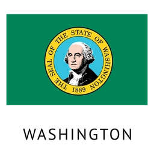

About Me
My name is Bailey. I am a third year student working towards a degree in Software Development. I was born and raised in Olympia, Washington, but I currently live in Oregon where I work as an assistant manager at Verizon full-time. I enjoy playing video games and playing with my two cats in my free time.
Washington State, United States of America
The State of Washington is home to multiple volcanoes, including Mount Rainier, Mount St. Helens, Mount Baker, Glacier Peak, and Mount Adams. These volcanoes are part of the Cascade Range, which extends from British Columbia to northern California. From winter sports to summer waterfall hikes, these mountains are a paradise for outdoor recreation.
